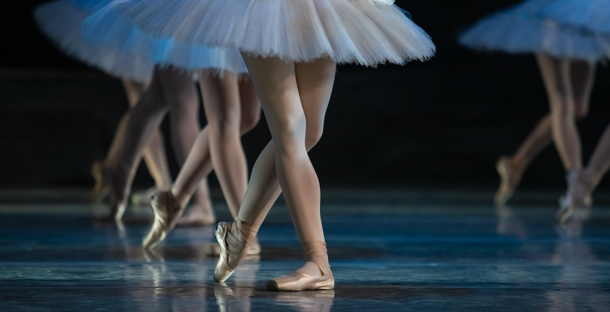

Dancing Ballet
What is Ballet?
Ballet is an art form created by the movement of the human body.
It is theatrical – performed on a stage to an audience utilizing costumes, scenic design and lighting. It can tell a story or express a thought, concept or emotion. Ballet dance can be magical, exciting, provoking or disturbing.

Styles of Ballet
-
Classical ballet :
is what people generally think of first when it comes to “ballet.” Classical ballet reached its height in 19th- century Russia through the work of choreographers like Marius Petipa and Lev Ivanov.
-
Contemporary ballet :
is influenced by modern dance. Renowned contemporary ballet choreographers include Twyla Tharp, Jiří Kylián, Paul Taylor, William Forsythe and Dwight Rhoden
My Experience
I have been dancing ballet since i was 5 years old.
Ballet has helped me to excellent my posture and increase my flexibility.
My Hobbies